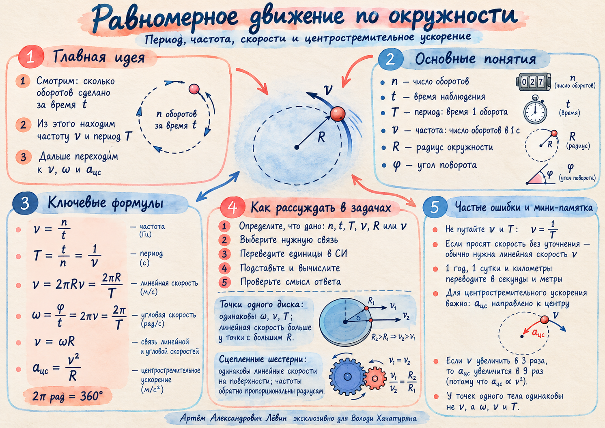

Линейная скорость
v = 2πRν = 2πR / T
Измеряется в м/с. Направлена в каждой точке по касательной к окружности.
Учебные заметки · 10 октября 2026
Здесь одна и та же формула ведёт к двум разным выводам. На одном диске совпадают угловые скорости точек. У сцепленных шестерён совпадают модули скоростей на ободах.
Повторим период и частоту, научимся выбирать инвариант в задаче, а затем проверим формулы на собственной модели.
Количество оборотов n может быть дробным. Четверть окружности за секунду — это четверть оборота за секунду.
Показывает число оборотов за одну секунду.
Измеряется в герцах (Гц). Если n = ¼ при t = 1 с, то ν = 0,25 Гц.
Показывает, сколько секунд длится один оборот.
Для того же движения T = 4 с. Из формул также следуют n = t/T и t = n/ν.
За один полный оборот точка проходит путь 2πR и поворачивается на угол 2π радиан.
Измеряется в м/с. Направлена в каждой точке по касательной к окружности.
Измеряется в рад/с. Угол φ здесь измеряется в радианах: 360° = 2π рад.
Главная задача — определить, какой параметр общий у сравниваемых объектов.
Все точки совершают оборот за одно и то же время: ω, ν, T одинаковы.
Точка на расстоянии 20 см от оси быстрее точки на 15 см: при v₁ = 1,5 м/с получаем v₂ = 2 м/с.
При внешнем зацеплении без проскальзывания равны модули скоростей зубьев в месте контакта; направления вращения противоположны.
Если R₁ = 20 см, ν₁ = 2 Гц, R₂ = 10 см, то ν₂ = 4 Гц.
Меняйте радиусы и исходную частоту. Переход между режимами сразу меняет физическое условие и все вычисляемые величины.
В режиме диска оба радиуса отсчитываются от одной оси. В режиме шестерён это радиусы двух разных колёс.
При равных радиусах значения могут совпасть в обоих режимах; физическое объяснение при этом различается. Изменение величин происходит без проскальзывания.
Направление скорости непрерывно меняется. Центростремительное ускорение указывает от точки к центру.
Размерность — м/с². При неизменном радиусе увеличение скорости в 3 раза увеличит ускорение в 9 раз.
Если v постоянно, то aц обратно пропорционально R. Если ω постоянно, то aц пропорционально R.
Всегда называйте условие, прежде чем делать вывод о зависимости.
Удобный маршрут от условия задачи к ответу.
От прямой подстановки до сравнения колёс. Решения сначала выполните в тетради; ответы раскрывайте после работы.
| № | Ответ |
|---|---|
| 1 | 0,25 Гц; 4 с |
| 2 | 4 Гц; 0,25 с |
| 3 | 12 оборотов |
| 4 | v = π/4 м/с; ω = π/2 рад/с |
| 5 | ω = 10π рад/с; v = 2π м/с |
| 6 | ≈ 465 м/с |
| 7 | 2 м/с |
| 8 | 6 Гц; вращается противоположно первой |
| 9 | 18 м/с²; увеличение в 4,5 раза |
| 10 | 6 Гц; v = 0,72π м/с; aц = 8,64π² м/с² |
